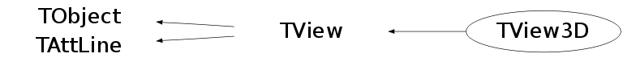

class TView3D: public TView
The 3D view class
The original Fortran implementation was adapted to HIGZ/PAW by Olivier Couet and Evgueni Tcherniaev.
This View class is a subset of the original system. It has been converted to a C++ class by Rene Brun.
TView3D creates a 3-D view in the current pad. In this 3D view Lego and Surface plots can be drawn and also 3D polyline and markers. Most of the time a TView3D is created automatically when a 3D object needs to be painted in a pad (for instance a Lego or a Surface plot).
In some case a TView3D should be explicitly. For instance to paint a 3D simple scene composed of simple objects like polylines and polymarkers. The following macro gives an example:
Several coordinate systems are available:
- Cartesian
- Polar
- Cylindrical
- Spherical
- PseudoRapidity/Phi
Function Members (Methods)
public:
| TView3D() | |
| TView3D(Int_t system, const Double_t* rmin, const Double_t* rmax) | |
| virtual | ~TView3D() |
| void | TObject::AbstractMethod(const char* method) const |
| static void | AdjustPad(TVirtualPad* pad = 0) |
| virtual void | AdjustScales(TVirtualPad* pad = 0)MENU |
| virtual void | TObject::AppendPad(Option_t* option = "") |
| virtual void | AxisVertex(Double_t ang, Double_t* av, Int_t& ix1, Int_t& ix2, Int_t& iy1, Int_t& iy2, Int_t& iz1, Int_t& iz2) |
| virtual void | TObject::Browse(TBrowser* b) |
| virtual void | Centered()MENU |
| virtual void | Centered3DImages(TVirtualPad* pad = 0) |
| static TClass* | Class() |
| virtual const char* | TObject::ClassName() const |
| virtual void | TObject::Clear(Option_t* = "") |
| virtual TObject* | TObject::Clone(const char* newname = "") const |
| virtual Int_t | TObject::Compare(const TObject* obj) const |
| virtual void | TObject::Copy(TObject& object) const |
| static TView* | TView::CreateView(Int_t system = 1, const Double_t* rmin = 0, const Double_t* rmax = 0) |
| virtual void | DefinePerspectiveView() |
| virtual void | DefineViewDirection(const Double_t* s, const Double_t* c, Double_t cosphi, Double_t sinphi, Double_t costhe, Double_t sinthe, Double_t cospsi, Double_t sinpsi, Double_t* tnorm, Double_t* tback) |
| virtual void | TObject::Delete(Option_t* option = "")MENU |
| Int_t | TAttLine::DistancetoLine(Int_t px, Int_t py, Double_t xp1, Double_t yp1, Double_t xp2, Double_t yp2) |
| virtual Int_t | TObject::DistancetoPrimitive(Int_t px, Int_t py) |
| virtual void | TObject::Draw(Option_t* option = "") |
| virtual void | TObject::DrawClass() constMENU |
| virtual TObject* | TObject::DrawClone(Option_t* option = "") constMENU |
| virtual void | DrawOutlineCube(TList* outline, Double_t* rmin, Double_t* rmax) |
| virtual void | TObject::Dump() constMENU |
| virtual void | TObject::Error(const char* method, const char* msgfmt) const |
| virtual void | TObject::Execute(const char* method, const char* params, Int_t* error = 0) |
| virtual void | TObject::Execute(TMethod* method, TObjArray* params, Int_t* error = 0) |
| virtual void | ExecuteEvent(Int_t event, Int_t px, Int_t py) |
| virtual void | ExecuteRotateView(Int_t event, Int_t px, Int_t py) |
| virtual void | TObject::Fatal(const char* method, const char* msgfmt) const |
| virtual void | FindNormal(Double_t x, Double_t y, Double_t z, Double_t& zn) |
| virtual TObject* | TObject::FindObject(const char* name) const |
| virtual TObject* | TObject::FindObject(const TObject* obj) const |
| virtual void | FindPhiSectors(Int_t iopt, Int_t& kphi, Double_t* aphi, Int_t& iphi1, Int_t& iphi2) |
| virtual void | FindScope(Double_t* scale, Double_t* center, Int_t& irep) |
| virtual void | FindThetaSectors(Int_t iopt, Double_t phi, Int_t& kth, Double_t* ath, Int_t& ith1, Int_t& ith2) |
| virtual void | Front()MENU |
| virtual void | FrontView(TVirtualPad* pad = 0) |
| virtual Bool_t | GetAutoRange() |
| virtual Int_t | GetDistancetoAxis(Int_t axis, Int_t px, Int_t py, Double_t& ratio) |
| virtual Double_t | GetDproj() const |
| virtual Option_t* | TObject::GetDrawOption() const |
| static Long_t | TObject::GetDtorOnly() |
| virtual Double_t | GetDview() const |
| virtual Double_t | GetExtent() const |
| virtual const char* | TObject::GetIconName() const |
| virtual Double_t | GetLatitude() |
| virtual Color_t | TAttLine::GetLineColor() const |
| virtual Style_t | TAttLine::GetLineStyle() const |
| virtual Width_t | TAttLine::GetLineWidth() const |
| virtual Double_t | GetLongitude() |
| virtual const char* | TObject::GetName() const |
| virtual char* | TObject::GetObjectInfo(Int_t px, Int_t py) const |
| static Bool_t | TObject::GetObjectStat() |
| virtual Option_t* | TObject::GetOption() const |
| virtual TSeqCollection* | GetOutline() |
| virtual Double_t | GetPsi() |
| virtual void | GetRange(Float_t* min, Float_t* max) |
| virtual void | GetRange(Double_t* min, Double_t* max) |
| virtual Double_t* | GetRmax() |
| virtual Double_t* | GetRmin() |
| virtual Int_t | GetSystem() |
| virtual Double_t* | GetTback() |
| virtual const char* | TObject::GetTitle() const |
| virtual Double_t* | GetTN() |
| virtual Double_t* | GetTnorm() |
| virtual UInt_t | TObject::GetUniqueID() const |
| virtual void | GetWindow(Double_t& u0, Double_t& v0, Double_t& du, Double_t& dv) const |
| virtual Double_t | GetWindowHeight() const |
| virtual Double_t | GetWindowWidth() const |
| virtual Bool_t | TObject::HandleTimer(TTimer* timer) |
| virtual ULong_t | TObject::Hash() const |
| virtual void | TObject::Info(const char* method, const char* msgfmt) const |
| virtual Bool_t | TObject::InheritsFrom(const char* classname) const |
| virtual Bool_t | TObject::InheritsFrom(const TClass* cl) const |
| virtual void | TObject::Inspect() constMENU |
| void | TObject::InvertBit(UInt_t f) |
| virtual TClass* | IsA() const |
| virtual Bool_t | IsClippedNDC(Double_t* p) const |
| virtual Bool_t | TObject::IsEqual(const TObject* obj) const |
| virtual Bool_t | TObject::IsFolder() const |
| Bool_t | TObject::IsOnHeap() const |
| virtual Bool_t | IsPerspective() const |
| virtual Bool_t | TObject::IsSortable() const |
| virtual Bool_t | IsViewChanged() const |
| Bool_t | TObject::IsZombie() const |
| virtual void | TObject::ls(Option_t* option = "") const |
| void | TObject::MayNotUse(const char* method) const |
| virtual void | TAttLine::Modify() |
| virtual void | MoveFocus(Double_t* center, Double_t dx, Double_t dy, Double_t dz, Int_t nsteps = 10, Double_t dlong = 0, Double_t dlat = 0, Double_t dpsi = 0) |
| virtual void | MoveViewCommand(Char_t chCode, Int_t count = 1) |
| virtual void | MoveWindow(Char_t option) |
| virtual void | NDCtoWC(const Float_t* pn, Float_t* pw) |
| virtual void | NDCtoWC(const Double_t* pn, Double_t* pw) |
| virtual void | NormalWCtoNDC(const Float_t* pw, Float_t* pn) |
| virtual void | NormalWCtoNDC(const Double_t* pw, Double_t* pn) |
| virtual Bool_t | TObject::Notify() |
| void | TObject::Obsolete(const char* method, const char* asOfVers, const char* removedFromVers) const |
| static void | TObject::operator delete(void* ptr) |
| static void | TObject::operator delete(void* ptr, void* vp) |
| static void | TObject::operator delete[](void* ptr) |
| static void | TObject::operator delete[](void* ptr, void* vp) |
| void* | TObject::operator new(size_t sz) |
| void* | TObject::operator new(size_t sz, void* vp) |
| void* | TObject::operator new[](size_t sz) |
| void* | TObject::operator new[](size_t sz, void* vp) |
| virtual void | PadRange(Int_t rback) |
| virtual void | TObject::Paint(Option_t* option = "") |
| virtual void | TObject::Pop() |
| virtual void | TObject::Print(Option_t* option = "") const |
| virtual Int_t | TObject::Read(const char* name) |
| virtual void | TObject::RecursiveRemove(TObject* obj) |
| virtual void | TAttLine::ResetAttLine(Option_t* option = "") |
| void | TObject::ResetBit(UInt_t f) |
| virtual void | ResizePad() |
| virtual void | RotateView(Double_t phi, Double_t theta, TVirtualPad* pad = 0) |
| virtual void | TObject::SaveAs(const char* filename = "", Option_t* option = "") constMENU |
| virtual void | TAttLine::SaveLineAttributes(ostream& out, const char* name, Int_t coldef = 1, Int_t stydef = 1, Int_t widdef = 1) |
| virtual void | TObject::SavePrimitive(ostream& out, Option_t* option = "") |
| virtual void | SetAutoRange(Bool_t autorange = kTRUE) |
| virtual void | SetAxisNDC(const Double_t* x1, const Double_t* x2, const Double_t* y1, const Double_t* y2, const Double_t* z1, const Double_t* z2) |
| void | TObject::SetBit(UInt_t f) |
| void | TObject::SetBit(UInt_t f, Bool_t set) |
| virtual void | SetDefaultWindow() |
| virtual void | SetDproj(Double_t dproj) |
| virtual void | TObject::SetDrawOption(Option_t* option = "")MENU |
| static void | TObject::SetDtorOnly(void* obj) |
| virtual void | SetDview(Double_t dview) |
| virtual void | SetLatitude(Double_t latitude) |
| virtual void | TAttLine::SetLineAttributes()MENU |
| virtual void | TAttLine::SetLineColor(Color_t lcolor) |
| virtual void | TAttLine::SetLineStyle(Style_t lstyle) |
| virtual void | TAttLine::SetLineWidth(Width_t lwidth) |
| virtual void | SetLongitude(Double_t longitude) |
| static void | TObject::SetObjectStat(Bool_t stat) |
| virtual void | SetOutlineToCube() |
| virtual void | SetParallel()MENU |
| virtual void | SetPerspective()MENU |
| virtual void | SetPsi(Double_t psi) |
| virtual void | SetRange(const Double_t* min, const Double_t* max) |
| virtual void | SetRange(Double_t x0, Double_t y0, Double_t z0, Double_t x1, Double_t y1, Double_t z1, Int_t flag = 0) |
| virtual void | SetSystem(Int_t system) |
| virtual void | TObject::SetUniqueID(UInt_t uid) |
| virtual void | SetView(Double_t longitude, Double_t latitude, Double_t psi, Int_t& irep) |
| virtual void | SetViewChanged(Bool_t flag = kTRUE) |
| virtual void | SetWindow(Double_t u0, Double_t v0, Double_t du, Double_t dv) |
| virtual void | ShowAxis()MENU |
| virtual void | ShowMembers(TMemberInspector& insp) |
| virtual void | Side()MENU |
| virtual void | SideView(TVirtualPad* pad = 0) |
| virtual void | Streamer(TBuffer& b) |
| void | StreamerNVirtual(TBuffer& b) |
| virtual void | TObject::SysError(const char* method, const char* msgfmt) const |
| Bool_t | TObject::TestBit(UInt_t f) const |
| Int_t | TObject::TestBits(UInt_t f) const |
| virtual void | ToggleRulers(TVirtualPad* pad = 0) |
| virtual void | ToggleZoom(TVirtualPad* pad = 0) |
| virtual void | Top()MENU |
| virtual void | TopView(TVirtualPad* pad = 0) |
| virtual void | UnZoom()MENU |
| virtual void | UnzoomView(TVirtualPad* pad = 0, Double_t unZoomFactor = 1.25) |
| virtual void | TObject::UseCurrentStyle() |
| virtual void | TObject::Warning(const char* method, const char* msgfmt) const |
| virtual void | WCtoNDC(const Float_t* pw, Float_t* pn) |
| virtual void | WCtoNDC(const Double_t* pw, Double_t* pn) |
| virtual Int_t | TObject::Write(const char* name = 0, Int_t option = 0, Int_t bufsize = 0) |
| virtual Int_t | TObject::Write(const char* name = 0, Int_t option = 0, Int_t bufsize = 0) const |
| virtual void | Zoom()MENU |
| virtual void | ZoomIn()MENU |
| virtual void | ZoomMove()MENU |
| virtual void | ZoomOut()MENU |
| virtual void | ZoomView(TVirtualPad* pad = 0, Double_t zoomFactor = 1.25) |
Data Members
public:
| enum { | kPerspective | |
| }; | ||
| enum TObject::EStatusBits { | kCanDelete | |
| kMustCleanup | ||
| kObjInCanvas | ||
| kIsReferenced | ||
| kHasUUID | ||
| kCannotPick | ||
| kNoContextMenu | ||
| kInvalidObject | ||
| }; | ||
| enum TObject::[unnamed] { | kIsOnHeap | |
| kNotDeleted | ||
| kZombie | ||
| kBitMask | ||
| kSingleKey | ||
| kOverwrite | ||
| kWriteDelete | ||
| }; |
protected:
| Bool_t | fAutoRange | Set to TRUE if range computed automatically |
| Bool_t | fChanged | ! Set to TRUE after ExecuteRotateView |
| Bool_t | fDefaultOutline | Set to TRUE if outline is default cube |
| Double_t | fDproj | Distance from COP to projection plane |
| Double_t | fDview | Distance from COP to COV |
| Double_t | fLatitude | View angle latitude |
| Color_t | TAttLine::fLineColor | line color |
| Style_t | TAttLine::fLineStyle | line style |
| Width_t | TAttLine::fLineWidth | line width |
| Double_t | fLongitude | View angle longitude |
| TSeqCollection* | fOutline | Collection of outline's objects |
| Double_t | fPsi | View angle psi |
| Double_t | fRmax[3] | Upper limits of object |
| Double_t | fRmin[3] | Lower limits of object |
| Int_t | fSystem | Coordinate system |
| Double_t | fTB[16] | |
| Double_t | fTN[16] | |
| Double_t | fTback[16] | Back transformation matrix |
| Double_t | fTnorm[16] | Transformation matrix |
| Double_t | fUVcoord[4] | Viewing window limits |
| Double_t | fUpix | pad X size in pixels |
| Double_t | fVpix | pad Y size in pixels |
| Double_t | fX1[3] | First coordinate of X axis |
| Double_t | fX2[3] | Second coordinate of X axis |
| Double_t | fY1[3] | First coordinate of Y axis |
| Double_t | fY2[3] | Second coordinate of Y axis |
| Double_t | fZ1[3] | First coordinate of Z axis |
| Double_t | fZ2[3] | Second coordinate of Z axis |
Class Charts
{kind=link}
{kind=link}
{kind=link}
{kind=link}

Function documentation
TView3D(Int_t system, const Double_t* rmin, const Double_t* rmax)
TView3D constructor Creates a 3-D view in the current pad rmin[3], rmax[3] are the limits of the object depending on the selected coordinate system Before drawing a 3-D object in a pad, a 3-D view must be created. Note that a view is automatically created when drawing legos or surfaces. The coordinate system is selected via system: system = 1 Cartesian system = 2 Polar system = 3 Cylindrical system = 4 Spherical system = 5 PseudoRapidity/Phi
void AxisVertex(Double_t ang, Double_t* av, Int_t& ix1, Int_t& ix2, Int_t& iy1, Int_t& iy2, Int_t& iz1, Int_t& iz2)
Define axis vertices.
Input ANG - angle between X and Y axis
Output: AV(3,8) - axis vertices
IX1 - 1st point of X-axis
IX2 - 2nd point of X-axis
IY1 - 1st point of Y-axis
IY2 - 2nd point of Y-axis
IZ1 - 1st point of Z-axis
IZ2 - 2nd point of Z-axis
8 6
/ \ /|\
5 / \ 7 5 / | \ 7
|\ /| | | |
THETA < 90 | \6/ | THETA > 90 | /2\ |
(Top view) | | | (Bottom view) |/ \|
1 \ | /3 1 \ /3
\|/ \ /
2 4
void DefinePerspectiveView()
Define perspective view.
Compute transformation matrix from world coordinates
to normalised coordinates (-1 to +1)
Input :
theta, phi - spherical angles giving the direction of projection
psi - screen rotation angle
cov[3] - center of view
dview - distance from COV to COP (center of projection)
umin, umax, vmin, vmax - view window in projection plane
dproj - distance from COP to projection plane
bcut, fcut - backward/forward range w.r.t projection plane (fcut<=0)
Output :
nper[16] - normalizing transformation
compute tr+rot to get COV in origin, view vector parallel to -Z axis, up
vector parallel to Y.
^Yv UP ^ proj. plane
| | /|
| | / |
| dproj / x--- center of window (COW)
COV |----------|--x--|------------> Zv
/ | VRP'z
/ ---> | /
/ VPN |/
Xv
1 - translate COP to origin of MARS : Tper = T(-copx, -copy, -copz)
2 - rotate VPN : R = Rz(-psi)*Rx(-theta)*Rz(-phi) (inverse Euler)
3 - left-handed screen reference to right-handed one of MARS : Trl
T12 = Tper*R*Trl
void DefineViewDirection(const Double_t* s, const Double_t* c, Double_t cosphi, Double_t sinphi, Double_t costhe, Double_t sinthe, Double_t cospsi, Double_t sinpsi, Double_t* tnorm, Double_t* tback)
Define view direction (in spherical coordinates)
Compute transformation matrix from world coordinates
to normalised coordinates (-1 to +1)
Input: S(3) - scale factors
C(3) - centre of scope
COSPHI - longitude COS
SINPHI - longitude SIN
COSTHE - latitude COS (angle between +Z and view direc.)
SINTHE - latitude SIN
COSPSI - screen plane rotation angle COS
SINPSI - screen plane rotation angle SIN
void DrawOutlineCube(TList* outline, Double_t* rmin, Double_t* rmax)
Draw the outline of a cube while rotating a 3-d object in the pad.
void ExecuteRotateView(Int_t event, Int_t px, Int_t py)
Execute action corresponding to one event. This member function is called when a object is clicked with the locator If Left button clicked in the object area, while the button is kept down the cube representing the surrounding frame for the corresponding new latitude and longitude position is drawn.
void FindNormal(Double_t x, Double_t y, Double_t z, Double_t& zn)
Find Z component of NORMAL in normalized coordinates.
Input: X - X-component of NORMAL
Y - Y-component of NORMAL
Z - Z-component of NORMAL
Output: ZN - Z-component of NORMAL in normalized coordinates
void FindPhiSectors(Int_t iopt, Int_t& kphi, Double_t* aphi, Int_t& iphi1, Int_t& iphi2)
Find critical PHI sectors.
Input: IOPT - options: 1 - from BACK to FRONT 'BF'
2 - from FRONT to BACK 'FB'
KPHI - number of phi sectors
APHI(*) - PHI separators (modified internally)
Output: IPHI1 - initial sector
IPHI2 - final sector
void FindThetaSectors(Int_t iopt, Double_t phi, Int_t& kth, Double_t* ath, Int_t& ith1, Int_t& ith2)
Find critical THETA sectors for given PHI sector.
Input: IOPT - options: 1 - from BACK to FRONT 'BF'
2 - from FRONT to BACK 'FB'
PHI - PHI sector
KTH - number of THETA sectors
ATH(*) - THETA separators (modified internally)
Output: ITH1 - initial sector
ITH2 - final sector
void FindScope(Double_t* scale, Double_t* center, Int_t& irep)
Find centre of a MIN-MAX scope and scale factors
Output: SCALE(3) - scale factors
CENTER(3) - centre
IREP - reply (-1 if error in min-max)
Int_t GetDistancetoAxis(Int_t axis, Int_t px, Int_t py, Double_t& ratio)
Return distance to axis from point px,py.
Algorithm:
A(x1,y1) P B(x2,y2)
------------------------------------------------
I
I
I
I
M(x,y)
Let us call a = distance AM A=a**2
b = distance BM B=b**2
c = distance AB C=c**2
d = distance PM D=d**2
u = distance AP U=u**2
v = distance BP V=v**2 c = u + v
D = A - U
D = B - V = B -(c-u)**2
==> u = (A -B +C)/2c
void GetWindow(Double_t& u0, Double_t& v0, Double_t& du, Double_t& dv) const
Get current window extent.
void NDCtoWC(const Float_t* pn, Float_t* pw)
Transfer point from normalized to world coordinates.
Input: PN(3) - point in world coordinate system
PW(3) - point in normalized coordinate system
void NDCtoWC(const Double_t* pn, Double_t* pw)
Transfer point from normalized to world coordinates.
Input: PN(3) - point in world coordinate system
PW(3) - point in normalized coordinate system
void NormalWCtoNDC(const Float_t* pw, Float_t* pn)
Transfer vector of NORMAL from word to normalized coordinates.
Input: PW(3) - vector of NORMAL in word coordinate system
PN(3) - vector of NORMAL in normalized coordinate system
void NormalWCtoNDC(const Double_t* pw, Double_t* pn)
Transfer vector of NORMAL from word to normalized coordinates.
Input: PW(3) - vector of NORMAL in word coordinate system
PN(3) - vector of NORMAL in normalized coordinate system
void PadRange(Int_t rback)
Set the correct window size for lego and surface plots.
Set the correct window size for lego and surface plots.
And draw the background if necessary.
Input parameters:
RBACK : Background colour
void SetAxisNDC(const Double_t* x1, const Double_t* x2, const Double_t* y1, const Double_t* y2, const Double_t* z1, const Double_t* z2)
Store axis coordinates in the NDC system.
void SetOutlineToCube()
void SetRange(Double_t x0, Double_t y0, Double_t z0, Double_t x1, Double_t y1, Double_t z1, Int_t flag = 0)
Set 3-D View range.
Input: x0, y0, z0 are minimum coordinates
x1, y1, z1 are maximum coordinates
flag values are: 0 (set always) <- default
1 (shrink view)
2 (expand view)
void ResetView(Double_t longitude, Double_t latitude, Double_t psi, Int_t& irep)
Set view direction (in spherical coordinates).
Input PHI - longitude
THETA - latitude (angle between +Z and view direction)
PSI - rotation in screen plane
Output: IREP - reply (-1 if error in min-max)
Errors: error in min-max scope
void WCtoNDC(const Float_t* pw, Float_t* pn)
Transfer point from world to normalized coordinates.
Input: PW(3) - point in world coordinate system
PN(3) - point in normalized coordinate system
void WCtoNDC(const Double_t* pw, Double_t* pn)
Transfer point from world to normalized coordinates.
Input: PW(3) - point in world coordinate system
PN(3) - point in normalized coordinate system
void RotateView(Double_t phi, Double_t theta, TVirtualPad* pad = 0)
API to rotate view and adjust the pad provided it the current one.
void ToggleZoom(TVirtualPad* pad = 0)
Turn on /off the interactive option to Zoom / Move / Change attributes of 3D axis correspond this view.
void MoveFocus(Double_t* center, Double_t dx, Double_t dy, Double_t dz, Int_t nsteps = 10, Double_t dlong = 0, Double_t dlat = 0, Double_t dpsi = 0)
Move focus to a different box position and extent in nsteps. Perform rotation with dlat,dlong,dpsi at each step.
void MoveViewCommand(Char_t chCode, Int_t count = 1)
'a' increase scale factor (clip cube borders) 's' decrease scale factor (clip cube borders)